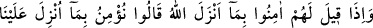
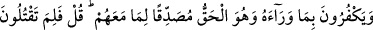
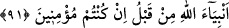

ulaşır. Daha sonra bu durumu Mevlânâ’nın taraftarları duyunca Şeyhi kıskanıp öldürmek
isterler. Mevlânâ onları sâkinleştirmek için yanlarına oğlu Sultan Veled’i gönderir.
Vaziyeti öğrenen Şeyh: “Allah Teâlâ bana gök ve yeri birbiri üzerine çevirme gücü
vermiştir. İstesem onları hemen helâk ederim ama, evlâ olanı sabretmem ve onların
ıslâhı için duâ etmemdir” der ve onlar için duâ eder, Sultan Veled de “âmîn” der. Bunun
üzerine o ateşli taraftarların da kalbi yumuşayıp tevbe ederler. Mesnevî’de gelir:
Hased ve hîle bilmeyenlere hased edersin
O hasedden gönlüne zulmet karanlık bulaşır.
Allah adamlarının ayağının altında toprak ol!
Bizim gibi, toprağı hasedin üzerine saç.
İşte nebîlerin ve velîlerin halleri de böyledir. Allah’ın Rasûlü de: “Yâ Rabbi,
kavmimi hidâyete erdir, çünkü onlar doğruyu bilmiyorlar.”[332] demedi mi?
Peygamber Efendimiz’in mübârek arkadaşları da nefsi terbiye husûsunda dert yanarlar
ve Rasûlullah’a, kötü huylardan kurtulmak, iç ve dışlarını temizlemek ve alçaltıcı
ateşden kurtulmak için bir an bile soru sormaktan geri durmazlardı.
91. Kendilerine: Allah’ın indirdiğine îmân edin, denilince: Biz sadece bize
indirilene (Tevrât’a) inanırız, derler ve ondan başkasını inkâr ederler. Halbuki o
Kur’ân, kendi ellerinde bulunan Tevrât’ı doğrulayıcı olarak gelmiş hak kitaptır. (Ey
Muhammed!) Onlara: Şayet siz gerçekten inanıyor idiyseniz daha önce Allah’ın
peygamberlerini neden öldürüyordunuz? deyiver.
Bu âyetteki ilk cümleyi Rasûlullah’ın ashâbı, Medîne Yahûdîlerine söylemişlerdi. Biz
bize inene inanırız, demekle Tevrât’ı ve onu tasdik için Beni İsrâîl peygamberlerine
inen emirler kastedilmiştir. Bunların dışındakiler onlara inmiş değildi. Burada
“indirilme” hâdisesini kendilerine nisbet ettiler çünkü bir peygambere indirilen şey
bağlayıcı olma açısından sanki ümmetine inmiş gibidir. “Kendilerine indirilenler
hâricindeki kitapları hak ve gerçek olduğu halde inkâr ederler” ki o kitaplar, Hak
isminin mutlak olarak nisbet edilebileceği en doğru şeylerdir. Aynı zamanda “Tevrât’ı
doğrulayıcıdır. Ona zıd değildir.”
Burada onların iddiâlarına bir reddiye vardır. Çünkü onlar, Tevrât’ı doğrulayan bir
kitabı inkâr etmekle Tevrât’ı da inkâr etmiş oldular. Daha sonra onlara, îmân ettiklerini
iddiâ ettikleri, Tevrât izin vermediği halde, peygamberleri öldürmeleri olayı ile itiraz